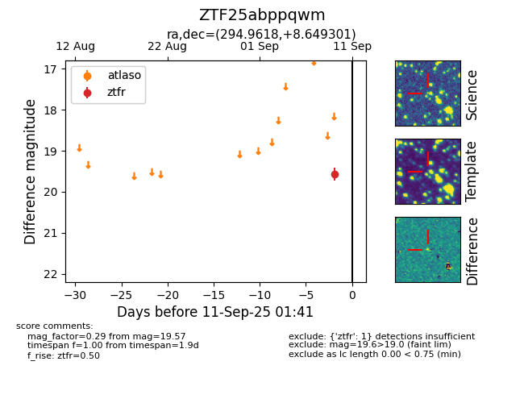

FINK: ZTF25abppqwm
Lasair: ZTF25abppqwm
ALeRCE: ZTF25abppqwm
ZTF25abppqwm (ztf,fink)
equatorial (ra, dec) = (294.9618,+8.64930)
galactic (l, b) = (46.2234,-6.65537)

last ztfg=19.95, ztfr=19.57
2 ztfg, 1 ztfr detections